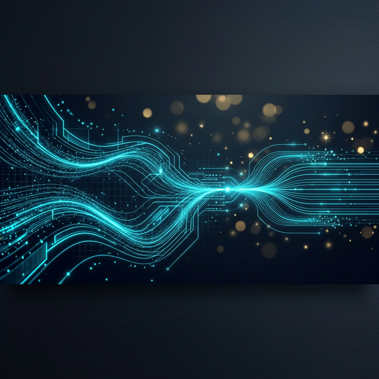
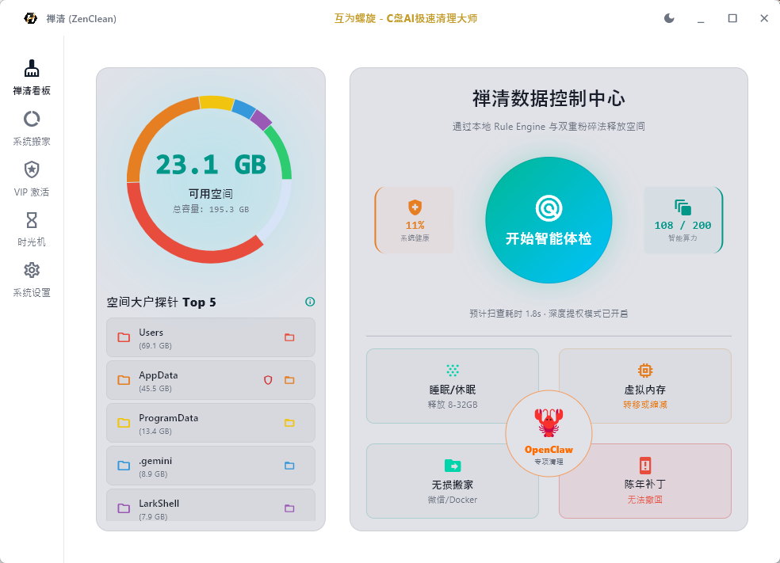
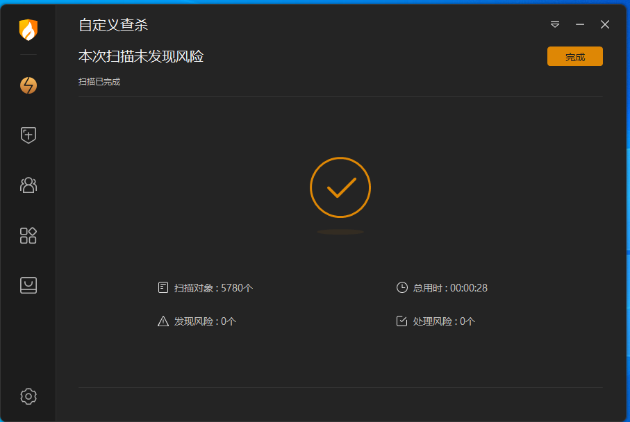
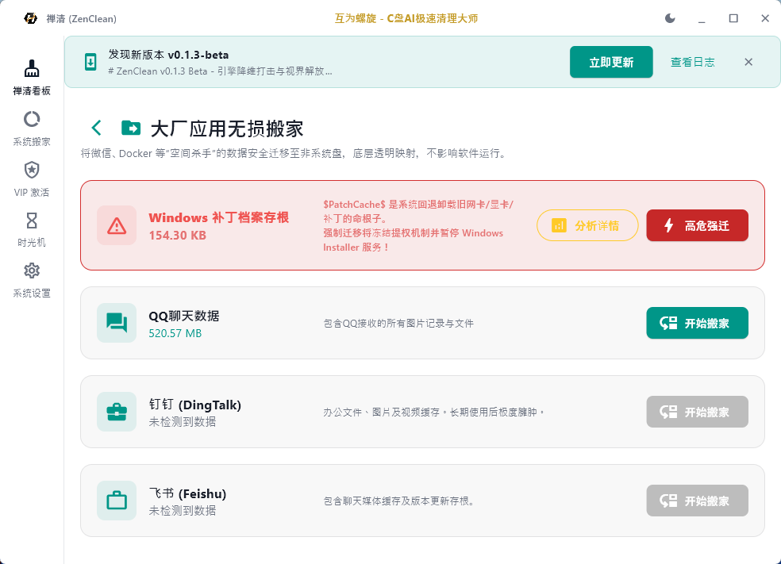
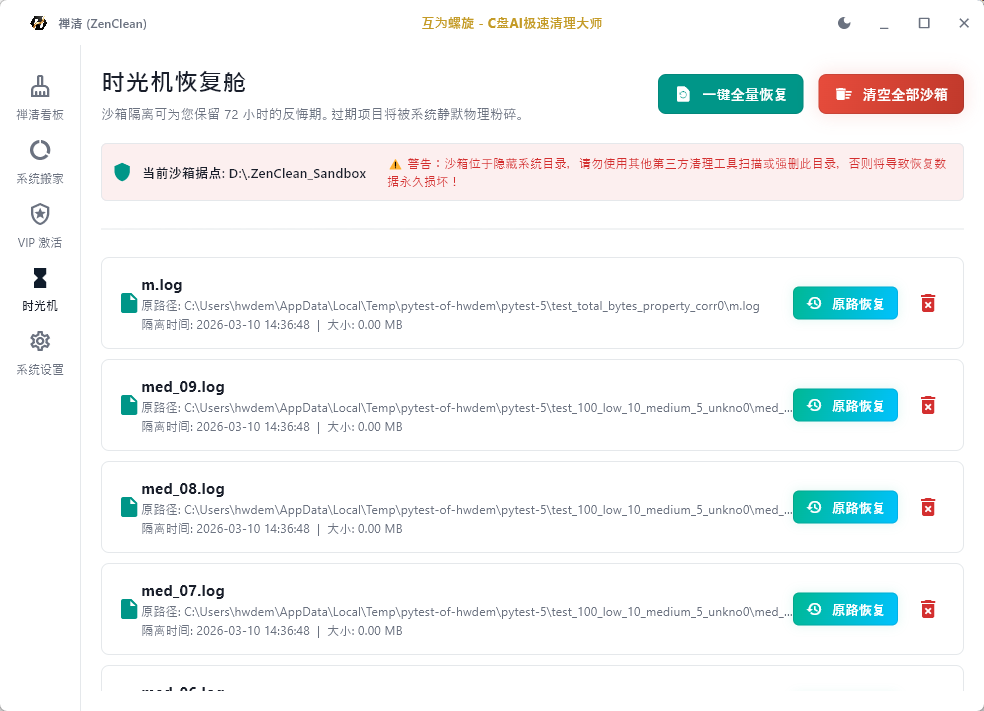

AI-powered smart scanning meets deep system cleaning. Bring Zen-like purity to your Windows system.

Async isolated engine 2.0 keeps UI buttery smooth during scans.
Never touches sensitive cores or useful configs like login sessions.
Deep system access to precisely strip legacy patches and app bloat.
Leveraging cloud-based LLMs for precise risk assessment. Fix C drive full/red issues instantly. Hundreds of thousands of files intelligently triaged for Windows 10/11. Every byte freed is safe.
ZenClean has been thoroughly scanned by mainstream security software (like Huorong), ensuring no viruses, trojans, or malicious behavior. Complete peace of mind for power users.

Using NTFS Junction底层 mapping technology. WeChat, Docker, VSCode and other C-drive hogs move in one click. No reinstall, zero感知.

Exclusive 72-hour regret period, prevent accidental deletion. All cleaned items enter a virtual isolation vault, ready for instant one-click restoration during the safety window.

Venture into system禁区 to precisely strip $PatchCache and Windows Update bloat. Age-based algorithm safely releases tens of GB of locked legacy space, solving C drive full issues.
Traditional cleaners often delete system files causing crashes. ZenClean uses cloud-based AI smart triage to precisely identify C-drive bloat, distinguishing core components from useless cache (Windows Update residue, WeChat/QQ data). Safe deletion, no false positives, easily free up tens of GBs.
Absolutely. ZenClean's "App Migration" uses NTFS Junction mapping technology to move large apps and games to other drives in one click. No registry modification required - true zero-loss migration that's fast and safe.
ZenClean is built for geeks who demand zero false positives. Beyond passing security scans from Huorong and others, we pioneered the "Time Machine Recovery Vault". Cleaned items stay in 72-hour virtual isolation - any anomaly can be instantly restored. Complete peace of mind.